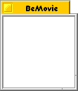
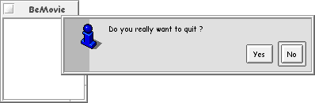

Building an application
To better understand how to build a GUI with Squirrel, let's build a rather simple application which will demonstrate how easy it could be.
Let's said that we want to store some datas on every movie you have. Your VCR tapes & DVD collection is increasing almost every months, and it's time to use your computer to help you with that ...
For each of your favorite movie, you want to store certains informations :
- Title of the Movie
- Style
- Some keywords on the movie
- Your ranking of the movie
- Date of release
- Casting
- Director name
- How did I acquire it ? (Bought or recorded from TV)
- Date of acquisition
- Type of media (DVD or VCR)
- Comments
What do we need for the user interface ?
- Select from a list of the movies
- Display of the information and modification of them
- Adding new movies and removing movies if needed
Font.init |
This command get all the fonts available on the system. It will allow us to create a font object |
make "font Font 'Comix Sans MS' |
|
We create a font object to be stored in the variable font from the font 'Comix Sans MS' |
$font~size "set 10 |
|
The standard font size is 9. We want it a bite bigger, so we use the method size on our font object to change it to 10 |
make "win Window "titled 'BeMovie' [100 100] "not.zoomable |
|
Creating a window is done by using the command Window. The look of the window is specified by the first input of the command. In our exemple we want a standard window. The next input is the title of the window. The list specified as third input is the position on the screen of the left-top corner of the window. The next inputs are a words which define the behavior of the window. In our case we just want the window to be not zoomable by the user |
$win~config "font "set :font |
|
In Squirrel, all the widgets inherites of the color and font of their parent. We want the widgets we will place in the window to all have the same font style and size, so we set the font we have create ealier to be the default font. Unless the font is changed for a widget, this default font will be used. |
$win~show |
|
A window is not visible after it creation. You need to call the method show on it to make it visible. It's better to show a window at last, well all the initialisation and gluing is done for better performance. |
|  |
In Squirrel, a window adapt it's size to fit it content. As we don't have any widget glued on the window, the size of the window is just fixed for the window to be visible.
Now that we have our window, let define what's happening when the user want to quit the application. We want the user to confirm that he want to quit, and the performe some operations maybe , like saving our database of movie.
We keep the same code than previously and we add just after the setting of the window font and before the show method the following code :
$win~config "font "set :font ; Ask the user if he confirm the Quit to ConfirmQuit :src output not (Question "info ["Yes "No] 'Do you really want to quit ?') end Hook :win "quit "ConfirmQuit |
|
The best way to respond to the user request to quit is to have a function which ask him to confirm that he want to quit, that's why we define the function ConfirmQuit to return the boolean negation of the output of the command Question. Indeed as this command return the index of the button clicked by the user in the list ["Yes "No], if the user click on Yes it will return 0 and so true will be returned by our function. Squirrel is waiting the value true to be returned by the function specified in the Hook given for the event "quit of a window to be true when we really want to quit and false else. |
|  |
Now, when the user will click on the
The best way to build a nice GUI with Squirrel is to follow the "simple" process of
- a menu
; create the menubar make "menubar MenuBar
To put menus on a window we need to create first a MenuBar
make "movie Menu 'Movie' $movie~add "Add $movie~add 'Remove current' $movie~add "separator $movie~add "Quit { $win~quit }A MenuBar is filled by Menu like the one we creating here. Once created, using the method add we add the items to the menu. The 2 firsts ones have only one argument as we don't know yet what we will do when the items are invoked by the user. The third item is a separator item
make "app Menu '?' $app~add 'Help' { Info "warning ["ok] 'Sorry folks, no help available for now' } $app~add "separator $app~add 'About ...' { Info "info ["ok] 'BeMovie!\n\nBrought to you by Squirrel\n\nBeGroovie December 1999' }We create another menu and add 3 items on it
; fill the menubar $menubar~add :movie :app
Adding the two menus to the menubar is done by using the method add of the MenuBar object
- the data zone
; create the data frame make "frame Frame "raised
A Frame is a container widget that have relief. Here we want the relief of the frame to be raised
$frame~config "expand "set (true) (true)
As we want this frame to contains the datas, it's the principal widget of the application, so it should expand it size automaticaly when the user resize the window
- a status/message zone
; create the status frame make "status Frame "lowered
The status frame will be a place where a message will be displayed to the attention of the user. We decide to set it relief to "lowered which give a sunken effecte to the frame
$status~config "expand.x "set true
We planing on having this status frame at the bottom of the window and when the user will resize the window, it should be resized by only horizontaly, so we set the property expand.x of the frame to true
; and create a text display to put into the status frame make "Status 'Ready to serve ...' make "msg Banner "Status "left
To display a message to the user, we going to need a widget which display a string. But, as we need the message displayed to be easy to change we need this widget to be linked to a variable. The widget Banner offer this ability by geting the string to dispay from a variable. Each time we will change the variable value, the text displayed will automaticaly change
$msg~config "high.color "set :Blue Glue :status "top [] :msg
To be more visible, we set the color of the text displayed by the Banner object to the color blue. The variable Blue contain a list describing the color in RGB : [49 61 225]
Now we just glue the 3 elements on the window :
; glue the three widget on the window Glue :win "top [] :menubar :frame Glue :win "bottom [] :status |
After completing our script file, we execute it and the window displayed is now:
The Frame that we have put beetween the menubar and the status frame is not visible when the window is showed as it don't have any widgets glued in it. But if the user resize the window, this frame will be showed as we have set the expand property of it to true in x and y :

The frame that we call data zone is going to display the movie and the informations on the selected movie. For a better understanding, we going to faq a list of movie and the informations on each of the movie. Normaly the list of the movie sould be loaded from a data file, but for now, we just going to fill the list and the datas by hand each time the script is executed:
/* We faque some movies */ ; movies list make "Movies ['13th Floor' 'Wallace & Gromit' 'Interview with a Vampire' 'The Matrix' '2001: A Space Odyssey'] ; movies data make "Datas Dictionary make "dico Dictionary $dico~set "style 'Science Fiction' $dico~set "keys ['virtual reality' 'crime'] $dico~set "rank 16 $dico~set "release 'September 99' $dico~set "casting ['Craig Bierko' 'Gretchen Mol' 'Vincent D\'Onofrio' 'Dennis Haysbert'] $dico~set "comment 'Nice SF Thriller' $Datas~set '13th Floor' :dico make "dico Dictionary $dico~set "style 'Animation' $dico~set "keys ['A Grand Day Out' 'The Wrong Trousers' 'A close Shave'] $dico~set "rank 19 $dico~set "release 'unknow' $dico~set "casting ['Wallace' 'Gromit'] $dico~set "director 'unknow' $dico~set "acquire "Bought $dico~set "date 'September 99' $dico~set "media "DVD $dico~set "comment 'Amazing clay animation!' $Datas~set 'Wallace & Gromit' :dico make "dico Dictionary $dico~set "style 'Horror' $dico~set "keys ['Vampire' 'New-Orleans'] $dico~set "rank 18 $dico~set "release 'unknow' $dico~set "casting ['Tom Cruise' 'Brad Pitt' 'Antonio Banderas' 'Stephen Rea' 'Christian Slater'] $dico~set "director 'Neil Jordan' $dico~set "acquire "Bought $dico~set "date 'October 99' $dico~set "media "DVD $dico~set "comment 'Great version of the amazing Anne Rice book' $Datas~set 'Interview with a Vampire' :dico make "dico Dictionary $dico~set "style 'Science Fiction' $dico~set "keys ['Matrix' 'Virtual Reality' 'Free your mind'] $dico~set "rank 18 $dico~set "release 'September 99' $dico~set "casting ['Keanu Reeves' 'Laurence Fishburn' 'Carrie-Anne Moss'] $dico~set "director 'The Wachowski Brothers' $dico~set "acquire "Bought $dico~set "date 'September 99' $dico~set "media "DVD $dico~set "comment 'Spectacular specials effects!!' $Datas~set 'The Matrix' :dico make "dico Dictionary $dico~set "style 'Science Fiction' $dico~set "keys ['Hal' 'Jupiter moon'] $dico~set "rank 17 $dico~set "release 'unknow' $dico~set "casting ['Keir Dullea' 'Gary Lockwood'] $dico~set "director 'Stanley Kubrick' $dico~set "acquire "Bought $dico~set "date 'September 99' $dico~set "media "DVD $dico~set "comment 'Great show .. the end is a bit strange ...' $Datas~set '2001: A Space Odyssey' :dico ; end of faking |
Our data structure for this application is a Dictionary Datas which contain an entry for each of our movies listed in the list Movies. The entry of a movie contain a dictionary which have an entry for each datas we storing.
We going now to devide our data zone in 2 part. In the left side, we will allow the user to select a movie, and on the right, the datas on the movie will be displayed :
make "selection Frame make "infos Frame |
| We create two frame to divide the "data zone" |
make "list SimpleList "single "right "movie :Movies [0 5] |
| SimpleList is a widget that display a list of simple elements and allow the user to select one item or more. This widget will be linked to the variable movie and will display the content of our movies list Movies. The two first input of the command specify that the user is allowed to select only one item at a time and that we want the scrollbar of the list to be displayed on the right. The last input is a list of two elements which discribe the width in characters of the widget and the height in characters also. Here, we want the widget to be as width as needed and to be big enought to display 5 items. |
$list~config "expand "set (true) (true) |
| We want the list to expand it-self when the user resize the window |
Glue :selection "top [] :list |
| We now glue on top of our selection frame the list we have created |
$selection~config "expand.y "set true $infos~config "expand "set (true) (true) |
| For a better estetic of the application, we want the frame containing the list to expand it size only verticaly while the right frame will be expanded both verticaly and horizontaly. |
Glue :frame "left [] :selection :infos |
|
|

|